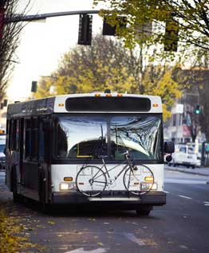

In 2000, New Jersey kicked off a program of complementary commuting that allows bus and train passengers to bring their bikes along for the ride. "From a planning perspective it's just good, smart management to encourage people to get out of their cars," says Jeffrey Warsh, executive director of New Jersey Transit (NJT).
Bicyclists can participate in the Rack `n Roll program whether their goal is a weekend excursion to Cape May or a daily one-mile commute from the bus stop to their workplace. Bicycle racks were installed on all 262 NJT buses that run through southern New Jersey, and secure bike lockers were set up at all train stops. The large cruiser buses carry bikes in their underneath cargo spaces, free of charge. At the height of rider participation in October 2000, buses picked up a total of 2,400 bikes.
The bike racks, which extend three feet in front of the buses, initially worried some drivers. But so far, the worries have been unwarranted. "We actually have a lower rate of bus-related incidents," says Warsh.
Rack 'n Roll was developed in response to the plan initiated by former New Jersey governor and current EPA administrator Christine Todd Whitman to carve out 2,000 miles of bike trails throughout the state over the next ten years. The first big change in state transportation policy was the lifting of a permit requirement for bringing bikes on trains. Policy-makers worried that the permits were the only thing standing between wellordered trains and unruly, wheel chair-crowding bike floods, but so far "we have not been besieged by spontaneous biking," Warsh says.
|
 RYAN J. LANE Traveling by bike and bus saves energy and is good for your health. |
|
|